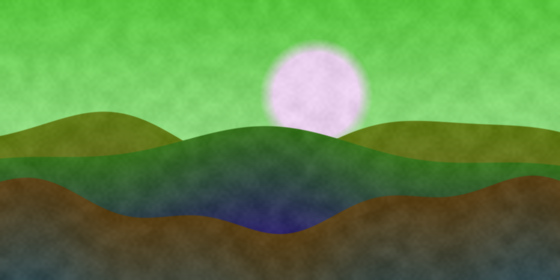
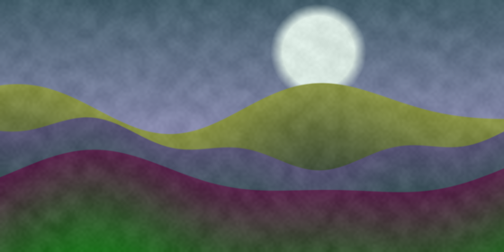
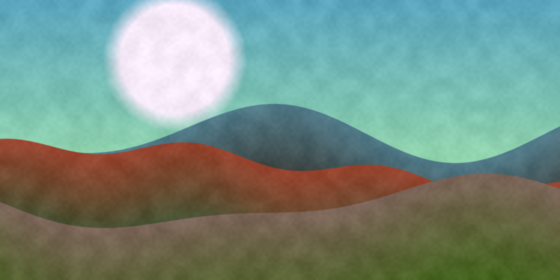
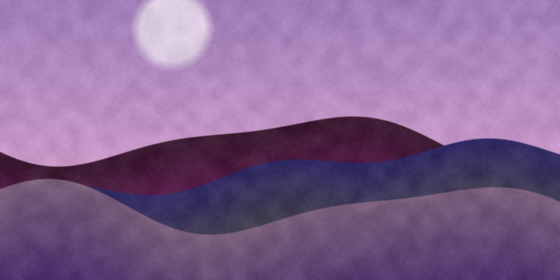
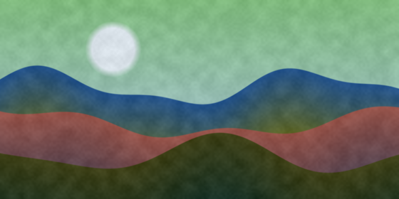
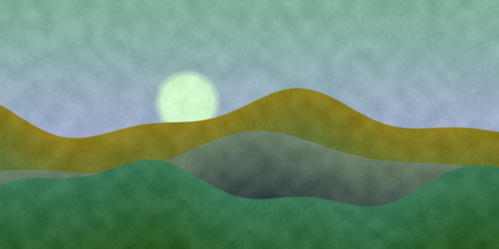
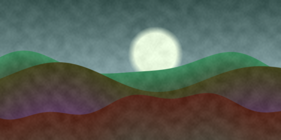
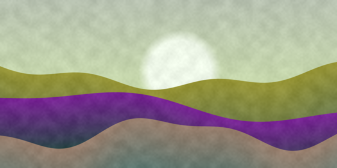

NewMorning over the ridge
Ana Ruiz · 1.2k likes
Purple hour
Tom Berg · 860 likes
4KThree valleys
Mei Lin · 2.4k likes
Low sun, long shadows
Jon Park · 530 likes
Quiet lake
Ana Ruiz · 940 likes
4KAfter the rain
Sam Okoro · 1.7k likes
NewRidge in the fog
Mei Lin · 310 likes
The last warm day
Tom Berg · 1.1k likes